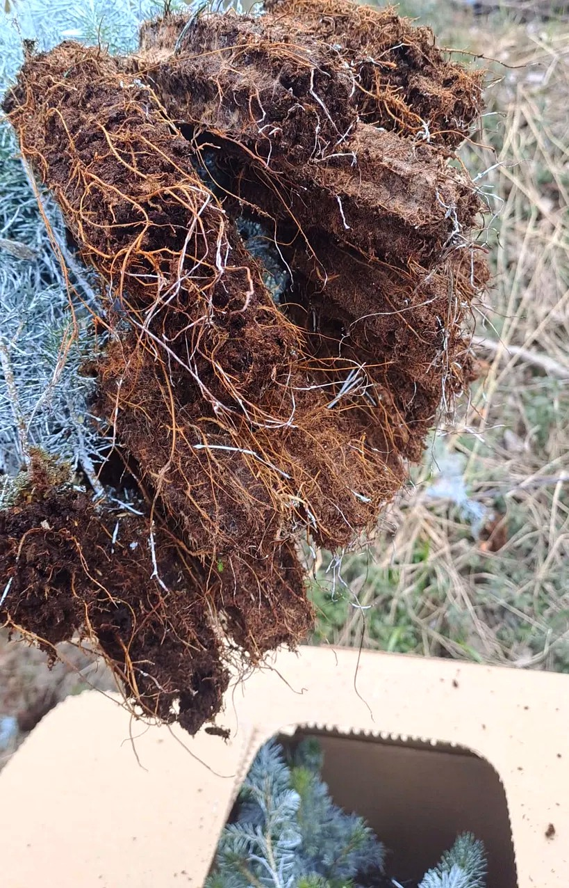

BountiGel on kaliumpolyakrylaattiin perustuva superabsorbentti, joka sitoo veden ja lannoitteen juuristovyöhykkeelle ja vapauttaa ne kasvin tarpeeseen. Vähemmän kastelua, tasaisempi kasvu, pienempi ravinnehuuhtouma.

Kuivunut paakku ei elvytä tainta, vaikka se kastellaan istutuksessa.
Kaliumpolyakrylaatti sitoo jopa 250-kertaisesti painonsa verran vettä ja luovuttaa sen kasvin tarpeeseen. Valmistajan istutuskokeissa taimen elpyminen parani 20–33 % jopa vähemmällä kastelulla (Carbon Neutral Ag Sciences, kenttäkoedata).
Vesigeeli tuo eniten hyötyä siellä, missä kastelu, ravinnehukka tai kasvin stressi maksavat rahaa. Katso oma alueesi.
Geeli pitää kasvualustan kosteuden tasaisena kastelujen välillä ja vähentää ravinteen kulkeutumista pois juuristosta. Taimikohtainen tasaisuus ja istutusstressin väheneminen näkyvät sadon laadussa.
Geeli voidaan syöttää olemassa olevan ilmastus- ja injektointikäsittelyn mukana suoraan kasvualustaan ilman erillistä työvaihetta. Vesi ja ravinne pysyvät juuristossa myös kuivilla, hiekkapohjaisilla viheriöillä.
Hydrogeeli on Suomen metsänviljelyssä tuttu käytäntö. Vesigeeli auttaa korvaamaan turvepohjaisia ratkaisuja ja suojaa paljasjuuri- ja paakkutaimia kuivumiselta maastovarastoinnin ja istutuksen aikana.
Kaksoisristisilloitettu rakenne imee vettä ja ravinteita moninkertaisesti omaan painoonsa.
Mekaanisesti luja - ei hajoa käytössä eikä nouse pintaan, vaan pysyy juuristovyöhykkeellä.
Luovuttaa veden ja ravinteet kasvin käyttöön, tasaa kuivia jaksoja ja vähentää huuhtoumaa.
BountiGelin valmistaja on Carbon Neutral Ag Sciences (USA). Tuotetiedot ja laaja viljelykoedata: koetulokset.
Meillä on näyte-eriä Suomessa. Jos alueesi tunnistui yllä, otetaan yhteyttä ja katsotaan sopiiko pieni koe teidän oloihinne.